我用32行代码写了13个API：泛用型增查改删接口生成自动机
crud
每个人都喜欢写 CRUD 代码，每个人都讨厌写 CRUD 代码，所以 CRUD 被叫做 crud （英文：污垢）。
增查改删，create、read、update 和 delete 是后端开发的基本操作。你有没有发现，自己写的每一个 CRUD 服务，以及这些服务中的各个 model 的 CRUD 实现，都差不多，整个 API 项目中充斥着大量的重复代码。加入新的模型时，往往就是把其他模型的 CRUD 实现复制一份，然后改一些字段名、函数名。这种工作就非常搬砖，一遍一遍地写同样的代码，还要一次一次的测试，甚至还有一样一样的文档。
但我就不一样了[误]，面对整整两个模型（甚至还是有嵌套关系的两个模型），写 13 个 CRUD 接口：
1 | # api to todos |
我只用 32 行代码（甚至包括 package、import 和为了凑够整数加上的空行）：
1 | package main |
这是个可以运行的真实例子。这个程序的大头是定义了两个模型，其余部分寥寥数行，竟实现了整套 CRUD 操作的 RESTful API，宛如魔法一般。尤其是 router.Crud[Model] 这个麻瓜可见的强力魔法。
这些魔法来自于我封装的（玩具）模块：github.com/cdfmlr/crud，一个帮助你极速实现简单 CRUD 项目的工（玩）具。
当然，这篇文章不是推销这个花了不到 24 小时实现的玩具项目，我想分享的只是这个东西的思路。
预备知识：Golang (1.18+)，Gin，GORM
回到最初的美好
当我还在学习元素与精灵魔法专业的时候，来王立瑟雷斯特利亚魔法学院支教的年轻老师总是提醒我们：“在学习大火球术这种进阶魔法之前，最好先弄明白日常使用的点火魔法背后的点点滴滴……”我想，这对于编程也是适用的。(我为什么能面不改色的写出这种句子。。。三室一厅！)
所以首先，让我们考虑一个简单的个人项目，比如，放假在家，却总是忘记浇花，所以考虑开发一个“家庭植物呵护云服务”。。其实就是个纪录家里花花草草浇水时间的东西，只有一个 model：
1 | type Plant struct { |
需要写一个 Get 和一个 UpdateWaterTime 接口。（作为一种短期内的理想情况，就目前的经济情况，我们不考虑购入新植物，并且只要按时浇水，就能在一定置信水平上认为不会有植物仙逝，所以不需要 Create 和 Delete。）
这个服务用任意数据库 + 任意 Web 框架（包括标准库的 net/http）都能轻松实现。比如我们用 GORM + Gin：
1 | var DB *gorm.DB |
一个文件，50 行就能够完成，并且足够清晰、高效。
但是，现实中的工程肯定没有这么单纯（除非你真的会因为忘记浇水，被老妈的责备驱使，写下一个“家庭植物呵护云服务”）。
在现实世界负重前行
面对现实世界中的工程，我们倾向于重新组织程序，把代码分层封装，每一层完成一部分工作。例如我们常采用这种受到 MVC 启发的分层架构：

(TODO: 这个是我的 crud 项目实现的结构图，之后记得重新画一个 MVC 分层的图，内容基本一样，只是 rm structured，但是高饱和彩色风格加中文 NOTODO：懒得画了，反正意思是一样的，又不是不能用）
在这种架构下，极简如我们的“家庭植物呵护云服务“也将不再如此简洁：
- router 层：注册路径，将请求分发给 controller。Gin 可以方便的实现 REST API 的注册。
1 | // package router |
- controller 层：解析请求，获取请求参数，调用 service 进行业务处理，响应返回的结果。Gin 提供了很多有用的操作：比如解析请求的
c.Bind、响应 JSON 数据的c.JSON。
1 | // package controller |
- service 层：业务逻辑层，说白了也就是进行 CRUD 操作，再说白了就是安排一个具体的数据库查询任务（事务），然后调用 DAO 层，完成数据哭操作，将结果返回。这一层的实现基本靠手写，没有太多库可以帮我们，毕竟这是你的业务逻辑层。
1 | // package service |
- DAO 层，就是数据库操作。当然，我们还希望该层进行数据库查询语言（SQL）、查询结果（表）与 Go 数据结构的相互转换。如果可以使用 ORM 库，这一层就非常简单了，基本不用写什么代码。
1 | // package dao |
在这种架构下，我们需要为每一个实体的每一个增查改删操作在每一层上编写相应的代码。一般来说，一个实体至少需要四五个操作：
1 | GET /users 获取用户列表 |
所以写出来就是十来个函数了。一个项目至少有三五个实体，马上就 50 个函数了。
这个数量倒不是问题，主要是，很多函数的具体实现思路都相同，但有有一些细节上的差异，比如日志打点，每次改几个字；又比如各种 GetXxxByID，模型的 ID 可能有的是自增整数，有的是某种什么奇怪的字符串，我们就不得不为这些细节差异便携很多套类似的代码。
我们知道，像我一样平庸的程序员一天有效的代码一般是 200 行左右。但这种重重复复的 CRUD 代码，一天很容易就干出 500 到 1k 行。这也侧面说明了这些代码的机械、重复、低信息量。
让我们来考虑一下解决这个问题，拒绝复制粘贴。
抽象、泛化
Go 1.18 为我们提供了泛型，而且即使是之前的 Go 版本也拥有接口、反射。那么我们是不是可以利用这些泛化工具，实现一套可复用的抽象 CRUD 实现？比如其中一个抽象的 Update：
1 | router : PUT /models/:id |
最底层的 GORM，接受的参数本来就是 interface{} （a.k.a. any 在 Go 1.18 中），它靠反射提供了泛化能力，所以这一层的问题就不用我们解决了。
关键是 service 和 controller 层（上一节的例子中，真正需要我们写大量代码的地方）。事实上，也很容易实现：
1 | func UpdateHandler[Model any](idParam string) gin.HandlerFunc { |
这个 controller 被用闭包包的严严实实：外层函数接受一个类型参数 Model，告诉 handler 自己是要为什么模型处理请求的，也就是说 UpdateHandler[Model]() 制造一个 UpdateModelHandler；还有一个参数 idParam，告诉 handler 路由中指定的 URL 参数，例如对于 PUT /users/:UserID，idParam = "UserID"，这个应该被传进来，而不是在里面瞎猜一个（例如简单认为参数就是固定的 id，这样遇到 GET /groups/:id/users/:id 就寄了）。
不过我有罪，在 controller 里写了一些业务逻辑（检查存在再更新），理想情况下，这整套工作应该是由业务逻辑层的 service.Update 独自完成的。这个函数是我从多年前的屎山里抄来的，如果让您看的不爽了请务必点名批评曾经的我（当然是技术上的批评，请不要不尊重督促我完成传奇的 “家庭植物呵护云服务” 的家人）。留下优化的空间不一定有罪，但过早的优化往往是万恶之源，所以我没有改动它，即这里的重构留给读者作为练习。
接下来是 service 层的 Update 函数，注意到上面 controller 中对它的调用没有传递泛型参数，不是忘了写，也不是 Go 可以自动推测这个泛型，只是确实不需要泛型：
1 | // package service |
因为前面的 controller 层越俎代庖，我们的 service 层实在无事可做，只好象征性地检查一下参数是否为 nil，然后调用 orm 去更新纪录。在正确的实现下，service 函数可能都像 GetByID 那样需要类型参数把泛型传进来的（GetByID 函数的实现也给读者思考）。
不过切勿乱用泛型，必要的时候再加，摘一段 Go 官方 blog：
Let’s start with a general guideline for programming Go: write Go programs by writing code, not by defining types. When it comes to generics, if you start writing your program by defining type parameter constraints, you are probably on the wrong path. Start by writing functions. It’s easy to add type parameters later when it’s clear that they will be useful.
不管怎样，即使是咱这种恶疾缠身的烂代码，也是侥幸实现了泛化的纪录更新功能，接下来只需要定义好模型，然后在 router 层中注册一下，它就可以工作了：
1 | // package model |
1 | // package router |
如法炮制，我们容易实现泛型的 Get、泛型的 Create、泛型的 Delete，这样你就拥有了一整套泛型的 CRUD 实现。
1 | GET /models |
在完成这一切后，如果你时间充裕，还可以进一步，把魔爪伸向 router 层，实现一个一键 CRUD API 生成：
1 | // Curd add CRUD routes for model T to the group: |
这大致上就是文章开头提到的强力魔法的真面目了（但有所不同，注意观察哦👀）。
cdfmlr/crud
时间总是匆促，DDL步步紧逼，都喜欢荫凉路，谁没事一天造轮子，。如果你想用这样的“泛用型增查改删接口生成自动机”，但又不想从头实现一个，不妨试一试我的实现：
注：该模块名 crud 是 CRUD Robotics for Universal Deadlines 的递归缩写。
除了基本的“泛用型增查改删接口自动生成”功能，该模块还封装了常用的日志、配置等功能哦，或者对于现实世界的工程，也可以把一些写好的 service、controller 单独拿出来用，总会帮你节约一些开发时间。
在该项目被充分完善以前（crud < v1.0.0），不推荐用于生产环境。因为目前为止（crud v0.0.2），这个项目的很多模块甚至没有单元测试。但欢迎任何人参与包括但不限于反馈、建议、讨论、PR、code review 等任何形式的贡献。如果没有大家的帮助，我们或将难以在本世纪（公元 21 世纪）内达到 crud v1.0.0 的里程碑。
(这东西只是我探索将 CRUD 代码泛型化、通用化的一种初级产物，不喜欢欢迎批评但不要喷。我知道地球上存在只需要写更少代码，并且经历了生产考验更加鲁棒的更好的开源项目可以更优雅地实现本文所述的功能；甚至还有不用写一行代码就能做到这一切的黑魔法。但是，我只是想去写一个，just for fun :)